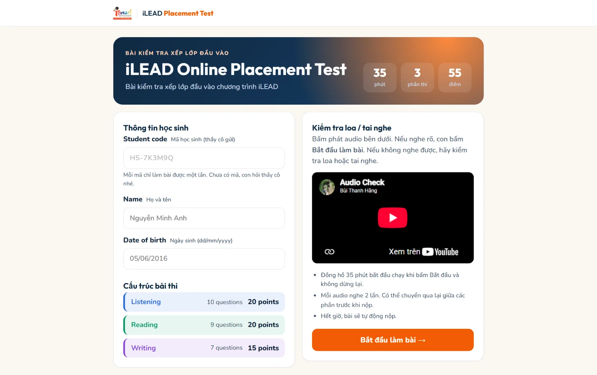
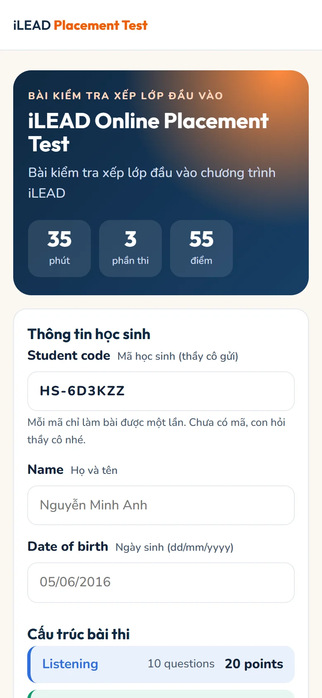
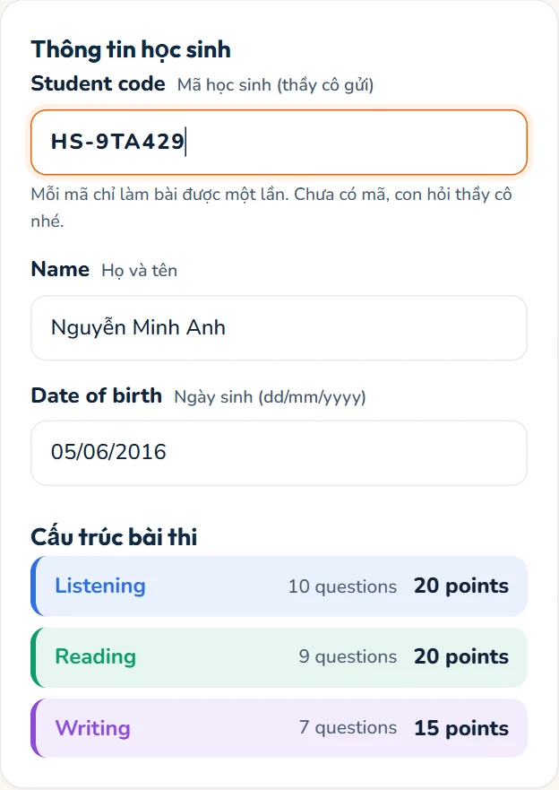
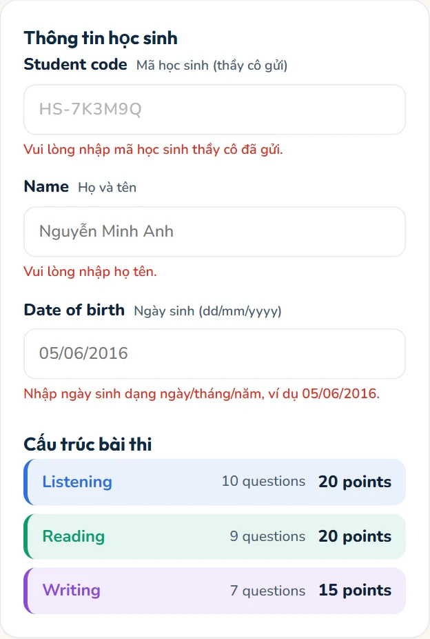
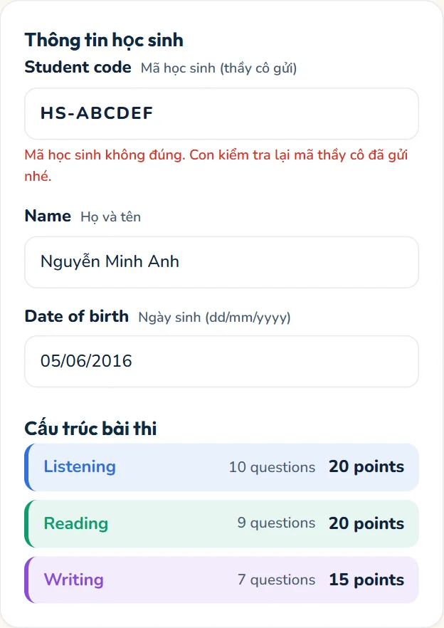
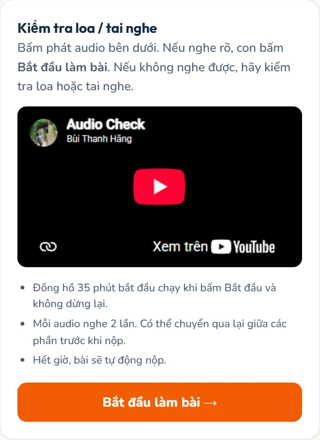
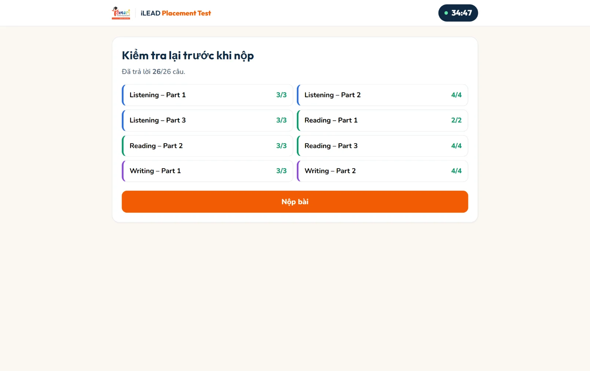
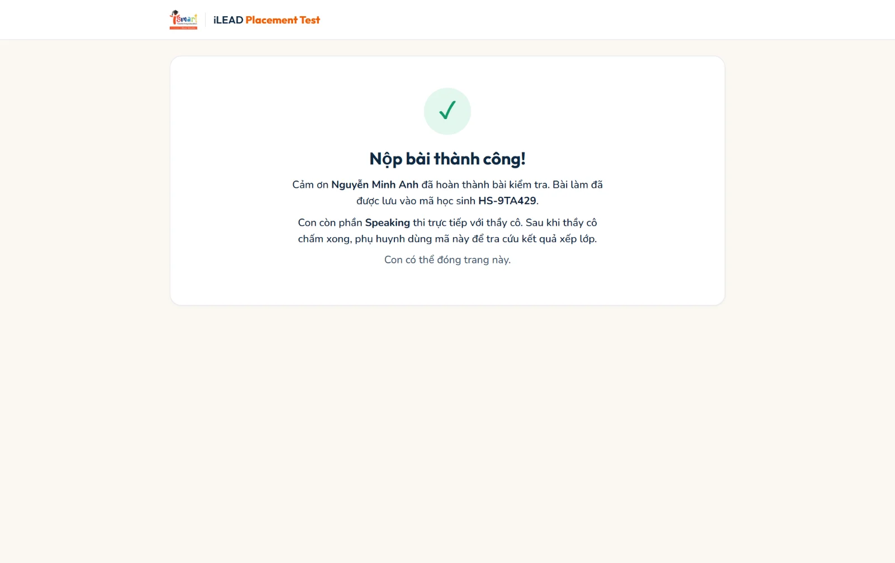
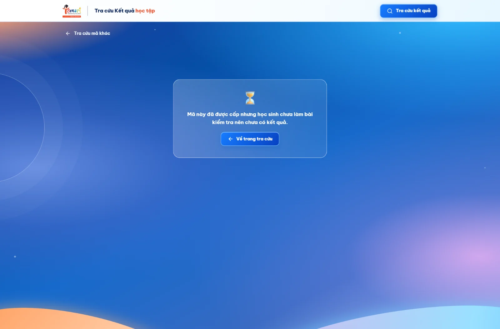

iSMART Education · Dành cho học sinh và phụ huynh
Bài kiểm tra giúp thầy cô xếp con vào lớp iLEAD phù hợp. Làm theo từng bước dưới đây, từ lúc mở link đến lúc nộp bài và xem kết quả.
| Phần thi | Làm ở đâu | Số câu | Điểm |
|---|---|---|---|
| Listening | Trên web | 10 | 20 |
| Reading | Trên web | 9 | 20 |
| Writing | Trên web | 7 | 15 |
| Speaking | Trực tiếp với thầy cô, không làm trên web | – | 20 |
Bấm vào link làm bài thầy cô gửi. Nếu thầy cô gửi link có kèm mã, ô Student code đã được điền sẵn, con chỉ cần nhập họ tên và ngày sinh.



Chữ đỏ hiện dưới ô nào là ô đó cần sửa. Hai trường hợp hay gặp:



Bài thi gồm 8 phần nối tiếp nhau. Mỗi phần có hướng dẫn bằng tiếng Anh ở đầu trang, con đọc kỹ rồi làm theo.
Trang Kiểm tra lại trước khi nộp cho biết con đã trả lời bao nhiêu câu ở mỗi phần. Phần nào chưa làm đủ, bấm vào phần đó để làm tiếp. Khi đã xong, bấm Nộp bài.

Hiện chữ Nộp bài thành công! là xong phần làm trên web. Con có thể đóng trang. Trang không hiện điểm, thầy cô sẽ chấm và báo kết quả.

Báo cáo hiện lớp iLEAD phù hợp, điểm từng kỹ năng, nhận xét của giáo viên và lộ trình học. Nút In báo cáo ở góc trên để in hoặc lưu thành PDF.
Nếu trang báo “chưa làm bài” hoặc “chưa làm xong bài Speaking”, nghĩa là thầy cô chưa chấm xong. Phụ huynh quay lại tra cứu sau, không cần làm gì thêm.

Kiểm tra âm lượng máy, rút ra cắm lại tai nghe, rồi bấm phát lại. Nếu vẫn không được, đổi sang trình duyệt Chrome hoặc Edge.
Mở lại đúng link làm bài trên cùng máy và cùng trình duyệt. Bấm “Làm tiếp bài đang dở”, các câu đã làm vẫn còn. Lưu ý đồng hồ không dừng trong lúc trang tắt.
Thường do mạng chập chờn. Bài làm vẫn được giữ, con kiểm tra lại mạng rồi bấm Nộp lại.
Bài tự nộp với những câu đã trả lời. Con không cần làm gì thêm.
Cứ nộp bài bình thường rồi báo thầy cô. Thầy cô sửa được thông tin khi chấm bài.
Mỗi mã chỉ làm được một lần. Muốn làm lại, liên hệ thầy cô để được cấp mã mới.
Ở trang bắt đầu, bấm dòng “Không phải bài của con? Làm bài mới với mã khác” rồi nhập mã của con.
iSMART Education · Hướng dẫn dùng cho bài kiểm tra xếp lớp iLEAD online. Ảnh minh hoạ dùng thông tin mẫu.